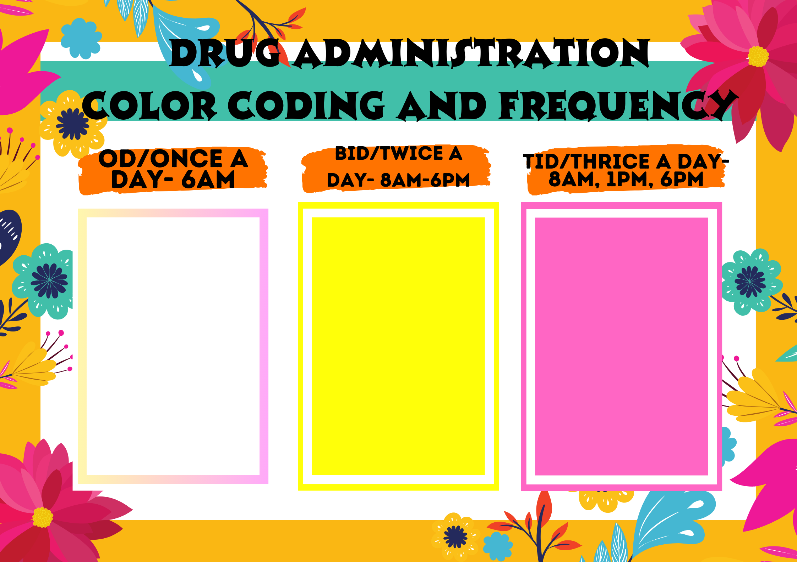
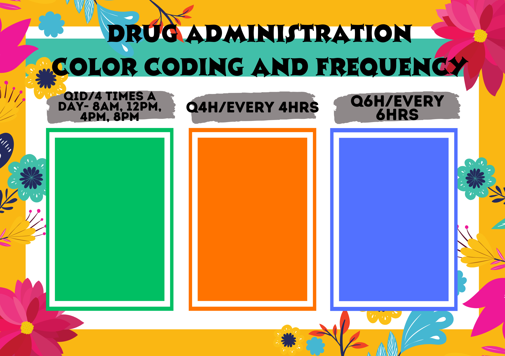
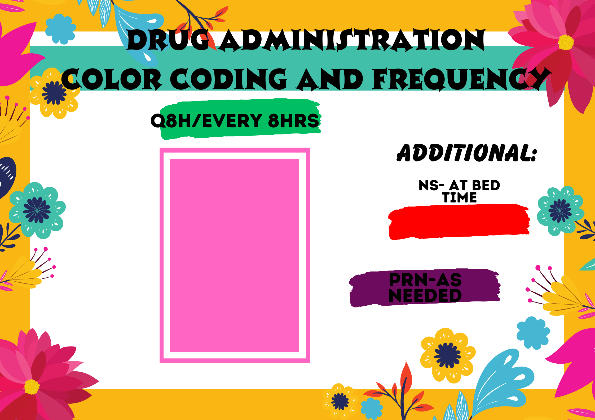

• Color of medication impacts the psychology of the patient and help them in speedy healing and recovery.
Apart from this, the color of medicines is coded in a way so that patient can take his prescription conveniently.
• It plays a crucial part in generating indications for correct dosage and helping the patients in taking their medicines as per the prescription.
It’s to implement this strategy and calendarize their dosage and schedule. Marking them efficiently can easy the adherence to the prescription.
• There must be a frequency in every medication since some drugs are time-sensitive for a variety of reasons, and taking them in a timely manner
each day is essential for ensuring effectiveness and minimizing negative side effects.
For more details, visit Importance of Colour Coding in Pharmaceutical Industry (testronixinstruments.com)



|